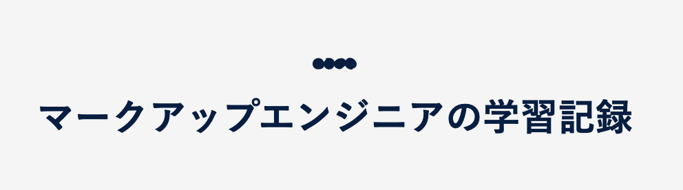
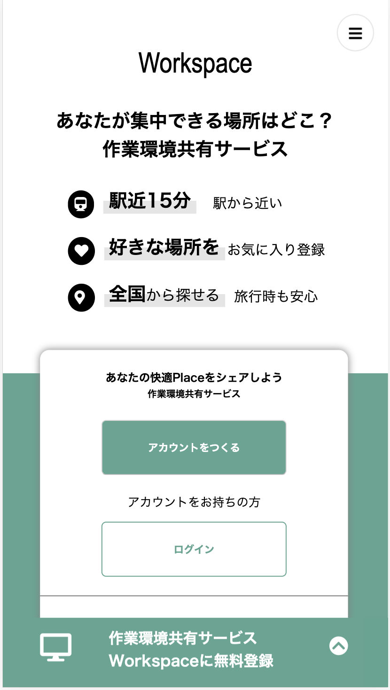

My Portfolio
はじめまして、柴田浩貴です。
ヘッダーメニュー(スマホの場合は、ヘッダーアイコン)をクリックすると、画面が切り替わります。

経歴
新卒で就職したホテルを退職後、オンラインプログラミングサイトProgateを通してプログラミングに出会いました。自分が書いたコードによって画面が変化していくことが楽しく、学習を継続していました。
JavaやPythonなどのプログラミング言語に少し触れた後、通信系のエンジニアに転職しましたが、"未経験だったためプログラミング言語を使用した業務にアサインされなかった"、"web系のエンジニアになりたかった"という2つの理由があり、退職を決意しました。
その後、プログラミングスクールTECH::EXPERTのフリーランスコースを受講しました。1日約10時間の学習量のアウトプット重視のカリキュラムを10週間継続しました。
現在(2020年2月8日)は、スクールを卒業しています。
発信
はてなブログ
LPの模写コーディングをiphoneの画面幅に最適化
